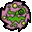
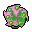
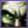
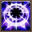
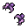
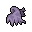
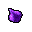
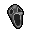
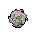

Pokédex / #442

Spiritomb #442
GhostDark
Its constant mischief and misdeeds resulted in it being bound to an Odd Keystone by a mysterious spell.
Generation 4 · Sinnoh

Stats
| Attack | 92 | |
|---|---|---|
| Defense | 108 | |
| Sp. Atk | 92 | |
| Sp. Def | 108 |
In the wild
| Wild level | 70–80 |
|---|---|
| HP | 50 |
| Experience | 15 |
| Egg groups | Amorphous |
Evolution
- Does not evolve.
Moves
| Level | Move | Type | Category | Power | Energy | Cooldown | Effect | |
|---|---|---|---|---|---|---|---|---|
| 1 | Tackle | Normal | Physical | 15 | 15 | 1s | Tackle is one of the most common and basic moves a Pokemon learns. It deals damage with no additional effects. | |
| 1 | Curse | Ghost | Status | 50 | 100 | 60s | Curse is a unique move that works differently for Ghost-type Pokemon than other Pokemon. Ghost-type Pokemon use 50% of their current HP to place a curse on the target. The cursed Pokemon loses hp during 5 turns. For all other Pokemon, Curse raises the user's Attack and Defense by one stage each and lowers Speed by one stage. | |
| 1 | Pursuit | Dark | Physical | 40 | 40 | 6s | Pursuit deals damage and has no secondary effect. | |
| 1 | Confuse Ray | Ghost | Status | – | 50 | 9s | Confuse Ray causes the target to become confused. | |
| 1 | Spite | Ghost | Status | – | 10 | 30s | The user drain 100-200 energy from the target. | |
| 1 | Shadow Sneak | Ghost | Physical | 40 | 40 | 11s | Shadow Sneak deals damage and has no secondary effect. | |
| 7 | Faint Attack | Dark | Physical | 60 | 60 | 9s | Faint Attack deals damage and ignores changes to the Accuracy and Evasion stats. | |
| 13 | Hypnosis | Psychic | Status | – | 80 | 60s | Hypnosis puts the target to sleep. | |
| 19 | Dream Eater | Psychic | Special | 100 | 120 | 15s | Dream Eater deals damage only on sleeping foes and the user will recover 50% of the HP drained. | |
| 25 |  | Ominous Wind | Ghost | Special | 60 | 100 | 22s | Ominous Wind inflicts damage and has a 10% chance of raising all of the user's stats by one stage. |
| 31 | Sucker Punch | Dark | Physical | 80 | 80 | 12s | Sucker Punch deals damage and has no secondary effect. | |
| 37 | Nasty Plot | Dark | Status | – | 100 | 90s | Nasty Plot raises the user's Special Attack stat by two stages. | |
| 43 | Memento | Dark | Status | – | 50 | 60s | Memento causes the user to faint and in return lowers the Attack and Special Attack stat of the target by two stages each. | |
| 49 |  | Dark Pulse | Dark | Special | 8 | 95 | 18s | Dark Pulse deals damage and has a 20% chance of causing the target to flinch. |
Field abilities
Flash
Special abilities
Pressure
Egg moves
Ally SwitchCaptivateDestiny BondDisableFoul PlayNightmareShadow SneakSmoke Screen
Technical machines
Calm MindDouble TeamDream EaterFacadeHidden PowerHyper BeamProtectPsychicRain DanceRestRock TombSecret PowerShadow BallShock WaveSubstituteToxicWater Pulse
Drops
| Item | Amount | Chance | |
|---|---|---|---|
 | cursed hand | 1 | 21.9% |
 | reaper cloth | 1 | 19.4% |
 | essence of a bad dream | 1 | 17.5% |
 | petrified scream | 1 | 12.5% |
 | spiritomb doll | 1 | 0.1% |
| Spooky Plate | 1 | 0.025% | |
| Toxic Plate | 1 | 0.025% |